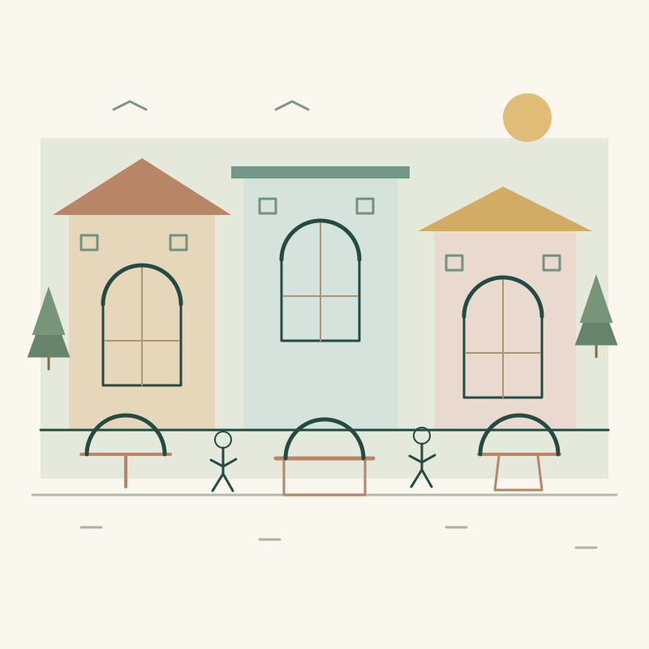
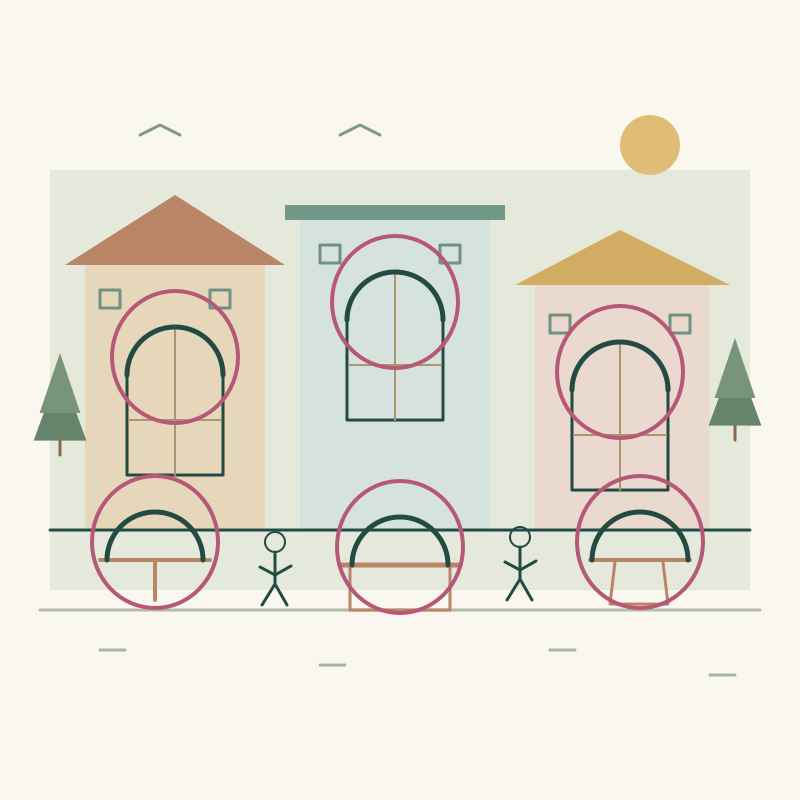
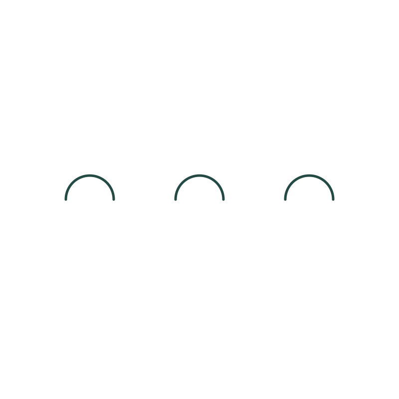

Challenge 11 · Attention and noticing
Was that always there?
Look once, note what stands out, then look again with a new cue. Afterwards, turn the same three arches into three different possibilities while keeping every original mark visible.
1. Look once
Look for about five seconds, then look away. No timer or score is required. Say or write three things you noticed.

Text-first alternative to the picture
Read this list once, look away, then recall what stood out: brick, cloud, cup, tree, bread, door, plate, window, book, spoon, pond, bowl.
You can use this route without seeing the image. Its second cue is inside the next step.
2. Ready? Reveal the cue and look again
Look for an upside-down U: a semicircular arch open at the bottom. Where does it repeat?
The illustration below is the exact same image file as before. Take as much time as you like.
Show the six arches

These rings are added only in this explanation. The two observation images above are identical.
Text-first second cue
Now look for things used when eating: brick, cloud, cup, tree, bread, door, plate, window, book, spoon, pond, bowl.
The list is unchanged. Cup, bread, plate, spoon and bowl are one possible grouping. Other interpretations are welcome.
3. Make three possibilities
Use this separate creative starter. The town scene was for observation; these three arches are for your drawing.

- Imagine three different roles for these arches. Try an object, a place, and something happening.
- Keep all three arches visible and in the same relative positions. Do not erase, cover or move individual marks. You may rotate or uniformly resize the whole starter.
- Add two useful clues to one idea. Save it, reset the starter, then try another.
Rough sketches, collage ideas and written descriptions all count. There is no single correct creative answer.

Starter image description
Three equal dark green semicircular arches sit side by side at the same height, open at the bottom.
Reflect
Did the image change, or did what you noticed change? What might you still be overlooking?
If you saw the arches immediately, try choosing a different feature. There is no required reaction.
After trying: the thinking behind this
This activity explores selective attention and is inspired by the frequency illusion: after noticing something, you may start spotting it more often and feel it has become more common. Seeing more instances does not by itself prove that their actual frequency increased.
A second look also brings extra viewing time and practice. This puzzle is an illustration, not a psychological test or proof that you experienced a bias.
Try before you peek
Our examples are possibilities, not answers to copy.
Explore three possibilitiesShare your possibility
Submit a drawing or text interpretation for review. Sharing is optional.
Share your interpretation